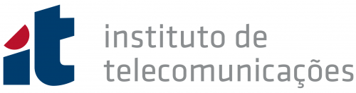

Home
 |
Contact information: andre.t.martins AT tecnico DOT ulisboa DOT pt Instituto de Telecomunicacões Torre Norte - Sala 9.07 Av. Rovisco Pais, 1 1049-001 Lisboa - Portugal Phone: +351 218418454  |
I am an Associate Professor at the Computer Science Department (DEI) and at the Electrical and Computer Engineering Department (DEEC) at Instituto Superior Técnico. I am also the VP of AI Research at Unbabel in Lisbon, Portugal, and a Senior Researcher at the Instituto de Telecomunicações, where I lead the SARDINE Lab.
Until 2012, I was a PhD student in the joint CMU-Portugal program in Language Technologies, at Carnegie Mellon University and at Instituto Superior Técnico, where I worked under the supervision of Mário Figueiredo, Noah Smith, Pedro Aguiar and Eric Xing.
My research interests revolve around natural language processing and machine learning, more specifically sparse and structured transformations, uncertainty quantification, interpretability, and multimodal processing applied to machine translation, natural language generation, quality estimation, and evaluation. My research has been funded by a ERC Starting Grant (DeepSPIN) and Consolidator Grant (DECOLLAGE), among other grants, and has received several paper awards at ACL conferences. I co-founded and co-organize the Lisbon Machine Learning School (LxMLS). I am a Fellow of the ELLIS society and a co-director of the ELLIS Program in Natural Language Processing. I am a member of the Lisbon Academy of Sciences and of the Research & Innovation Advisory Group (RIAG) of the EuroHPC Joint Undertaking.
Our work has been featured in the media:
* Slator piece on "Adding Chocolate to Mint"
* Science Business piece on EuroLLM
EuroLLM: Pioneering European Open Source AI
A EuroHPC Success Story: Speaking Freely with EuroLLM
TechCrunch piece on Large AI Grand Challenge
Slator piece on our method to detect and correct MT hallucinations
Current Post-docs
- Miguel Faria (Post-doc at IT, 2024-)
- Giuseppe Attanasio (Post-doc at IT, 2024-)
- Marcos Treviso (Post-doc at IT, 2023-)
- Ben Peters (Post-doc at IT, 2022-)
Current PhD Students
- Beatriz Canaverde (PhD at IST, 2025-)
- Miguel Ramos (PhD at IST, 2024-)
- Sonal Sannigrahi (PhD at IST, 2023-)
- Emmanouil Zaranis (PhD at IST, 2023-)
- Pavlo Vasylenko (PhD at IST, 2023-; co-supervised with Marcos Treviso)
- Sophia Sklaviadis (PhD at IST, 2023-)
- Margarida Campos (co-supervised with Mário Figueiredo from IST/UL)
- Saul Santos (co-supervised with Daniel McNamee from Champalimaud Foundation)
- Duarte Alves (PhD at IST, 2023-)
- António Farinhas (PhD at IST, 2021-)
- Haau-Sing Li (ELLIS PhD at TU Darmstadt University, 2021-; co-advised with Iryna Gurevych)
- Patrick Fernandes (PhD at CMU/IST, 2020-; co-advised with Graham Neubig)
- Nuno Guerreiro (PhD at IST, 2020-; co-advised with Pierre Colombo at University of Paris Saclay)
- Peiqin Lin (ELLIS PhD at LMU Munich, 2021-; co-supervised with Hinrich Schutze)
- Hugo Pitorro (Researcher at IT, 2024-; co-supervised with Marcos Treviso)
- Nuno Gonçalves (MSc Student at IST, 2024-; co-supervised with Marcos Treviso)
Alumni
- Sweta Agrawal (Post-doc at IT, 2024-2025, now Research Scientist at Google)
- Chunchuan Lyu (Post-doc at IT, 2021-2022)
- Chryssa Zerva (Post-doc at IT, 2021-2023, now Assistant Professor at Instituto Superior Técnico)
- Vlad Niculae (Post-doc at IT, 2018-2020, now Assistant Professor at University of Amsterdam)
- Erick Fonseca (Post-doc at IT, 2018-2020, now Data Scientist at Data Scientist at Kaufland)
- Taisiya Glushkova (PhD at IST, 2020-2024; co-advised with Chryssa Zerva at IST)
- Marcos Treviso (PhD at IST, 2019-2023, now post-doc at IT)
- Ben Peters (PhD at IST, 2018-2023, now post-doc at IT)
- Pedro Martins (PhD at IST, 2018-2022; co-advised with Zita Marinho from Google DeepMind, now at SAP)
- Tsvetomila Mihaylova (PhD at IST, 2018-2022, co-advised with Vlad Niculae, now at Aalto University)
- Gonçalo Correia (ELLIS PhD at IST, 2018-2022, co-advised with Vlad Niculae, now at Priberam)
- Gonçalo Faria (Researcher at IT, 2023-2024; now PhD Student at the University of Washington)
- Sameen Maruf (PhD at Monash University, 2016-: co-advised with Reza Haffari)
- Zita Marinho (PhD at CMU/IST, 2013-2018; co-advised with Geoff Gordon and Sidd Srinivasa, now Head of Research at Priberam Labs)
- António Farinhas (MSc at IST, 2020)
- Pedro Coelho (MSc at IST, 2020; co-advised with Christine Maroti at Unbabel)
- João Alves (MSc at IST, 2020; co-advised with Amin Farajian at Unbabel)
- João Moura (MSc at IST, 2020; co-advised with Fábio Kepler at Unbabel)
- Rita Costa (MSc at IST, 2020; co-advised with Luisa Coheur)
- Nikita Nangia (Summer Intern at IT, 2019)
- Michael Zhang (Research Intern at Unbabel, 2019)
- Daan van Stigt (Research Intern at Unbabel, 2019)
- Telmo Pires (Research Intern at IT and Unbabel, 2017, now at Google AI)
- Pedro Ferreira (MSc at IST, 2017-)
- Chaitanya Malaviya (Research Intern at Unbabel, 2017, now MSc at CMU)
- Julia Kreutzer (Research Intern at Unbabel, 2016, now PhD student at Heidelberg University)
- Daniel Ferreira (MSc at IST, 2015; co-advised with Mariana Almeida; now PhD at Vienna Technical University)
- Renato Negrinho (Research Intern at Priberam, 2014, now PhD at CMU)
- Vasco Marcelino (MSc at IST, 2014; co-advised with Miguel Almeida)
- Marta Quintão (MSc at IST, 2014)
- Pedro Ramos (MSc at IST, 2013)
News
- I presented "Open & Multilingual LLMs for Europe" in a discussion panel at EuroHPC Summit about the AI Factories. There I covered some of our recent successes with CroissantLLM, TowerLLM, EuroLLM, and EuroBERT.
- New EuroLLM website! We trained two LLMs from scratch, EuroLLM-1.7B and EuroLLM-9B, using the European supercomputing infrastructure (EuroHPC). These models support 35 languages (including all 24 EU official languages). They were released fully open and are among the best in several benchmarks. They have 300k+ downloads so far! This was done in collaboration with Instituto Superior Técnico, Instituto de Telecomunicações, Unbabel, The University of Edinburgh, CentraleSupélec among others and was recently featured as a success story at EuroHPC. Larger and more powerful models are on the making now!
- We released TowerLLM 7B and 13B: multilingual LLMs for translation-related tasks. Check our Tower Collection at Hugging Face. These models and datasets are now widely used by the community (200k+ downloads so far). We presented this work as a spotlight paper at COLM 2024.
- We participated for the first time in the WMT 2024 shared task on General Translation -- and we were the best participating system, with the best results in 8 out of 11 languages! (Bonus: we also won the Biomedical and the Chat Translation task!) Fruit of this work, Unbabel launched Widn.Ai -- the highest quality MT engine which can be personalized with instructions and used as an API. Try it out!
- We built xCOMET, a state-of-the-art interpretable model for MT evaluation and quality estimation. Give it a try! It was published in TACL and presented at ACL 2024.
- We were one of the 4 winning projects of the Large AI Grand Challenge grant (AI Boost), a highly competitive grant which comes with 2M GPU hours: https://lnkd.in/ghYTVaDb. We are using this allocation to train a mixture-of-experts version of Tower.
- In 2024, our team presented 20+ papers in top conferences (including NeurIPS, ICLR, ICML, COLM, TACL, EMNLP, COLM, ICML, ...). We had spotlight/oral papers at ICML, NeurIPS, and COLM. We presented in several keynote talks in workshops and other events.
- I am Program Co-Chair of ACL 2024.
- Great news: I got an ERC (European Research Council) Consolidator Grant on "Deep Cognition Learning for Language Generation (DECOLLAGE)". I am now looking for Post-Doc and PhD Students.
- I gave a keynote talk at the SEPLN 2022 conference.
- I gave a keynote at the Mercury Machine Learning Lab (MMLL) seminar series. I talked about how to go from sparse modeling to sparse communication. Check the video here!
- I am co-organizing LxMLS 2022 (Lisbon Machine Learning School), back to in-person this year! See here for details!
- I am SAC for ACL 2022 and AC for NeurIPS 2022.
- We have new papers accepted at CLeaR 2022, ICLR 2022, ACL 2022, NAACL 2022, ICML 2022.
- I gave a keynote talk at the TRITON conference.
- I gave a keynote talk at TALN where I presented some of the work we did in the DeepSPIN project. Here are the slides.
- I am co-organizing LxMLS 2021 (Lisbon Machine Learning School), which will be a fully remote school this year. See here for details!
- We have new papers accepted at NAACL 2021 and ACL 2021.
- I am AC for NAACL 2021, NeurIPS 2021, EMNLP 2021, ICLR 2022.
- I am Action Editor for TACL.
- I am co-directing the ELLIS NLP program with Iryna Guleyvich and Ivan Titov, with an amazing list of fellows and scholars!
- We're launching LUMLIS, the Lisbon unit of the ELLIS network!
- We have new papers accepted at EMNLP 2020 and NeurIPS 2020.
- I am SAC for EACL 2021 and AC for ICLR 2021.
- We have an opening for a Post-Doc position in the DeepSPIN project. See here for details!
- We have new papers accepted at ACL 2020, ICML 2020, and EAMT 2020.
- We have a new JMLR paper on Learning with Fenchel-Young Losses (work done with collaboration with Mathieu Blondel).
- I am AC for NeurIPS 2020 and EMNLP 2020.
- I was SAC for ACL 2020 and AC for ICLR 2020.
- We presented a tutorial on Latent Structure Models for NLP at ACL 2019 in Florence.
- I am giving an invited talk at the First EurNLP Summit in London.
- I am giving invited talks at 3 Summer schools: LxMLS 2019 in Lisbon, AthNLP 2019 in Athens, and MLRS 2019 in Bangkok.
- I was part of a discussion panel at Culturgest about AI. Here's the video (in Portuguese).
- We have new papers accepted at AISTATS, NAACL, ACL, and EMNLP 2019.
- Unbabel won the WMT 2019 Shared Task on Quality Estimation! Check the results here!
- We received the best system demo paper award for OpenKiwi, a Pytorch-based software toolkit for translation quality estimation. Check the repo and the demo paper at ACL 2019!
- We have a new EMNLP paper where we propose SparseMAP to build dynamic computation graphs via sparse latent structure.
- I gave an invited talk in the ACL 2018 Workshop on Neural Machine Translation and Generation. Here are the slides.
- We have a new ICML paper where we propose SparseMAP as a new inference procedure for sparse structured prediction (work done in collaboration with Vlad Niculae, Mathieu Blondel, and Claire Cardie).
- We have a new ACL short paper where we use new forms of sparse and constrained attention within neural machine translation (work done in collaboration with Chaitanya Malaviya and Pedro Ferreira).
- Great news: I got an ERC (European Research Council) Starting Grant on "Deep Structured Prediction in Natural Language Processing (DeepSPIN)". I am now looking for Post-Doc and PhD Students.
- I'm giving an invited talk in the EMNLP 2017 Workshop on Structured Prediction for NLP.
- I gave an invited talk in the ICML 2017 Workshop on Learning to Generate Natural Language and co-organized the ICML 2017 Workshop on Deep Structured Prediction.
- Our paper on end-to-end differentiable neural-easy first decoders made it to EMNLP 2017!
- We have a new TACL paper where we further improve our quality estimation system by using automatic post-editing as a auxiliary task.
- Our word-level quality estimation system achieved the top score in the First Conference on Machine Translation (WMT 2016). Check the paper here.
- Our paper on sparsemax was accepted at ICML 2016. It's a sparse, differentiable, alternative to the softmax activation.
- I joined Unbabel! We do AI powered human quality translation.
- I presented a tutorial on "Linear Programming Decoders in NLP" at EMNLP 2014, which covers integer linear programming, message-passing algorithms, and dual decomposition. The slides are available here and the videos here (part 1, part 2).
- Our TurboSemanticParser system achieved the top score in the open track of the SemEval 2014 task on "Broad-Coverage Semantic Dependency Parsing." Check the paper here.
- I presented a tutorial on "Structured Sparsity in NLP" at EACL 2014. The slides are available here (see here for an older version of the same tutorial presented at NAACL 2012).
- I received the Portuguese IBM Scientific Prize for my work in structured prediction and "Turbo Parsing."
- I successfully defended my thesis in May 11, 2012, at CMU!